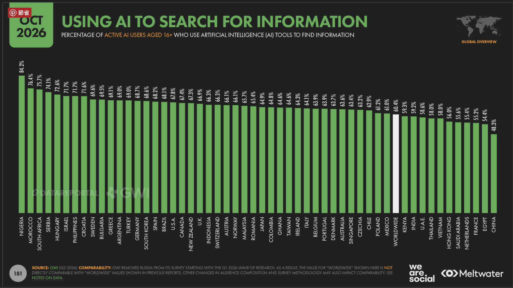
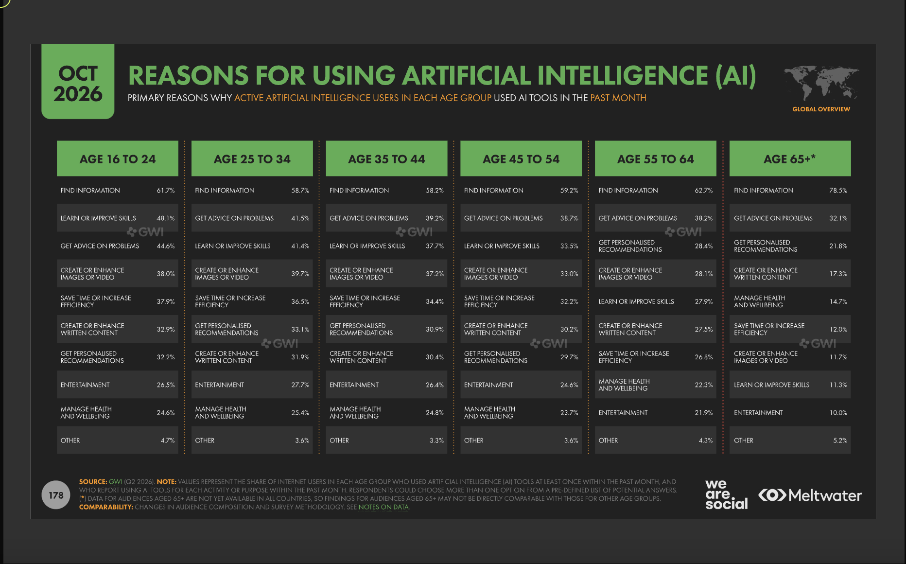
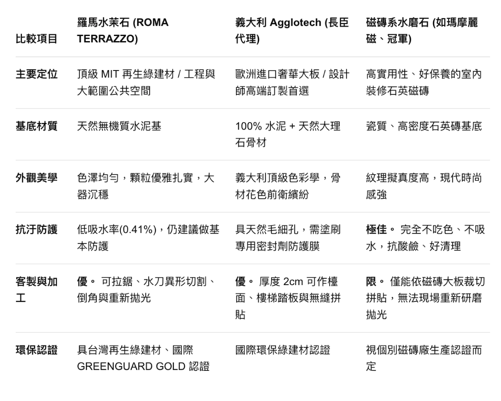
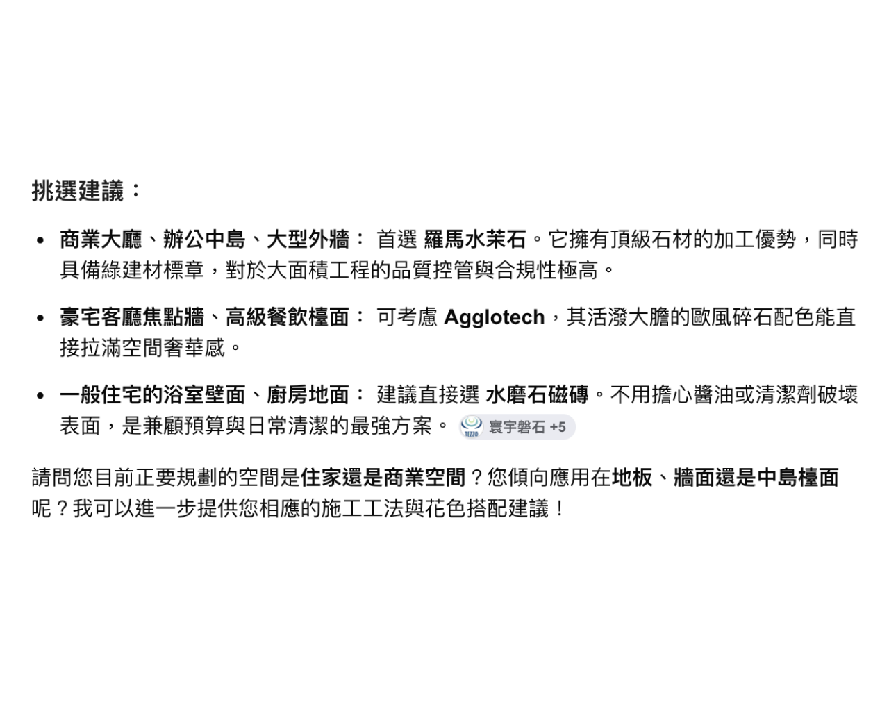
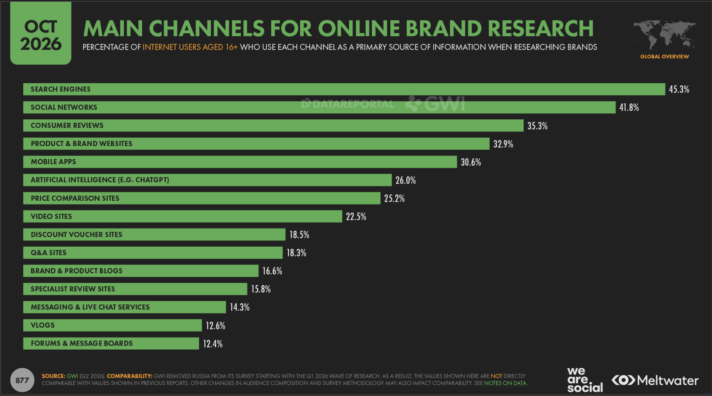
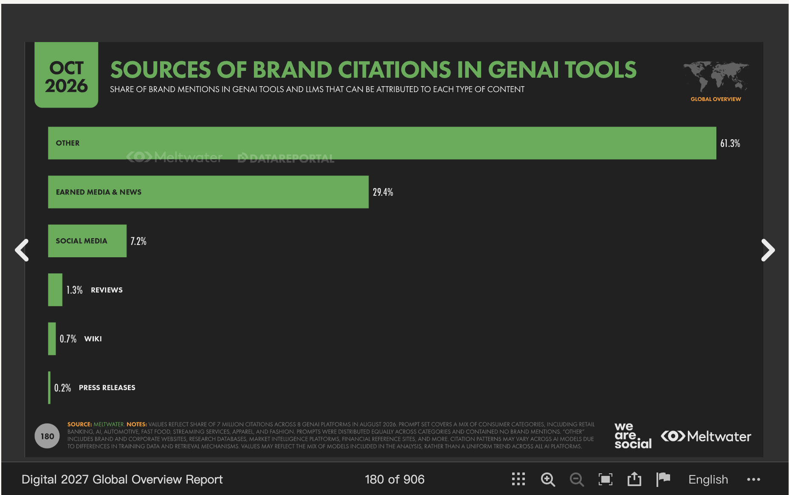

SEO：被搜尋到
讓客戶搜尋問題時，
找到你的網站與內容。
台灣活躍 AI 使用者
16 歲以上活躍 AI 使用者，非全台人口｜GWI，2026 Q2
資料來源：DataReportal / We Are Social / Meltwater
《Digital 2027: Global Overview Report》p.181
原始報告 / P.181
黃框是 Taiwan：這個改變，也發生在我們服務的市場。

16 歲以上活躍 AI 使用者；非全體台灣人口。黃色標示為本簡報加註，原圖數據未修改。
資料來源：DataReportal / We Are Social / Meltwater《Digital 2027: Global Overview Report》p.181｜GWI，2026 Q2。
報告原文 · 開啟原始報告 p.181
原始報告 / P.178
查找資訊不只發生在年輕族群；全球各年齡層都把它排在第一位。

對象：過去一個月使用過 AI 的各年齡層網友，可複選。*65 歲以上資料未涵蓋所有市場，不宜直接跨年齡比較。黃色高亮為本簡報加註。
資料來源：DataReportal / We Are Social / Meltwater《Digital 2027: Global Overview Report》p.178｜GWI，2026 Q2。
報告原文 · 開啟原始報告 p.178
使用者提問：
請推薦台灣的水磨石品牌，並提供他們的優勢比較



點擊箭頭查看建材情境；回答截圖為示例，材料條件仍須核對。
02 / 什麼是 GEO
Generative Engine Optimization｜生成式引擎最佳化
讓客戶搜尋問題時，
找到你的網站與內容。
讓品牌資料清楚、可查證，
增加被 AI 檢索與引用的機會。
服務說明、專業資格、案例。
GEO 與 SEO 一起累積。
GEO 建立在完善的 SEO 基礎上：先讓內容可被找到，再讓 AI 理解與引用。
完善 SEO 是重要基礎，並非 AI 引用的保證；不同平台的來源與檢索方式不同。參考：Google Search Central：AI features and your website。
從被提及，到被信任
被提及只是起點，可信的資訊才能承接下一步。
先理解服務與差異，
建立值得比較的名單。
查看官網、案例與評價，
核對資訊是否一致。
確認需求與條件，
再決定是否聯繫。
所以接下來要看：客戶會去哪裡，確認你的品牌？
以上為決策情境示意，並非固定順序或轉換保證。
原始報告 / P.877
全球 16 歲以上網友中，26% 以 AI 作為研究品牌的主要資訊管道之一。

三個數字來自同頁、同一調查對象；各管道並非互斥，不應相加。與前述「活躍 AI 使用者」的分母不同。
資料來源：DataReportal / We Are Social / Meltwater《Digital 2027: Global Overview Report》p.877｜GWI，2026 Q2。
報告原文 · 開啟原始報告 p.877
洞察 / 客戶如何從需求走向決策
上層看決策路徑，下層用買房與建材兩個情境對照。
辨認需求與限制，
開始尋找可行方案。
提出問題與條件，
建立初步候選名單。
比較官網、社群與案例，
向專業人士確認。
預約諮詢、驗證條件，
選擇合適的合作對象。
預算與通勤需求
詢問青埔建案差異
查官網、口碑與現場條件
預約賞屋與個別諮詢
空間用途與施工限制
詢問材料與品牌比較
核對規格、案例與使用回饋
索取樣品、詢價與洽談
你的內容，要能接住「我適合哪一個？」與「我為什麼能相信？」
AICA 為本演講的情境整理框架，非報告統計模型；實際路徑會往返，AI 回答不能取代個案查證。
原始報告 / P.180
引用原始報告｜p.180：生成式 AI 工具的品牌引用來源

「其他」61.3% 包含品牌與企業網站、研究資料庫、市場情報平台、金融參考網站等，不能全部解讀成官網貢獻。表列合計因四捨五入略高於 100%。
研究分析 2026 年 8 月、8 個生成式 AI 平台的 700 萬筆引用。提示詞涵蓋零售、銀行、汽車、速食、串流、服飾及時尚等消費類別，未直接包含品牌名稱；可用來觀察未指定品牌時的引用，但不是台灣全產業分布。不同平台的訓練、檢索方式與來源使用程度不同。
資料來源：DataReportal / We Are Social / Meltwater《Digital 2027: Global Overview Report》p.180｜Meltwater，2026 年 8 月。
報告原文 · 開啟原始報告 p.180
策略判斷 / 哪些產業應優先布局
共通點：資訊密集、決策成本高，且依賴深度比較。
總價高、區域與產品差異多；客戶需要比較條件與適合對象。
健康資訊重在準確可信；標示審查者資格、引用文獻，區分健康資訊與醫療建議。
條件與限制多；客戶需要看懂服務範圍、費用條件與專業資格。
預算與施工影響長期使用；客戶需要比較規格、工法與實作案例。
採購週期長、參與者多；企業需要比較方案、導入條件與服務支援。
客戶做決定前，越需要問清楚、比仔細，越值得先檢查品牌資訊。
以上為依決策特性提出的策略分類，非 Digital 2027 報告排名；實際優先順序仍須評估客群、搜尋需求與品牌現況。
內容可信度原則參考：Google Search Central｜實用、可靠、以使用者為優先的內容；五類產業為本簡報的策略判斷。
理解方法 / 原有經營，繼續累積
官網、案例與真實評價，都是品牌的基礎。
客戶搜尋服務與問題時，
能找到你的網站與內容。
把品牌資訊說清楚，
增加被查找與引用的機會。
你做什麼、適合誰、
有哪些案例與佐證。
先把原有網站與內容整理好，再觀察 AI 如何介紹你。
以 Google AI 搜尋為例，SEO 基礎仍然重要。參考：Google Search Central。不保證固定排名或 AI 引用。
現場互動 / 100 秒品牌快查
打開慣用 AI，開一個新對話；能聯網就開啟搜尋。
我在【地區】，想找【服務】。請列出 3 個可比較的品牌，說明理由並附來源。
例如：我在桃園青埔，想找老屋裝修服務。
請查找【品牌全名＋地區】的服務、服務地區與官網，附來源；無法確認請說不知道。
對照：是不是我？服務對不對？來源能不能核對？
留下一張截圖，記下問題、工具與日期；品牌健檢從這個差距開始。
指定品牌後出現，不等於自然推薦。單次結果受平台、提示詞與時間影響，不能代表整體曝光或 GEO 成效；來不及操作可拍下題目，會後再試。
下一步 / 把自查結果變成改善方向
剛才的結果，是我們一起檢查的起點。
盤點客戶常問的問題，
比較品牌與競品的出現情況。
核對服務、地區與來源，
找出過時、缺漏或不一致之處。
檢查服務說明、問答與案例，
排定網站、內容與外部佐證的改善順序。
帶著剛才的截圖，先釐清問題，再討論適合的 GEO 合作。
健檢會結合多個問題與來源觀察；單次回答不代表整體成效，也不保證 AI 推薦或成交。